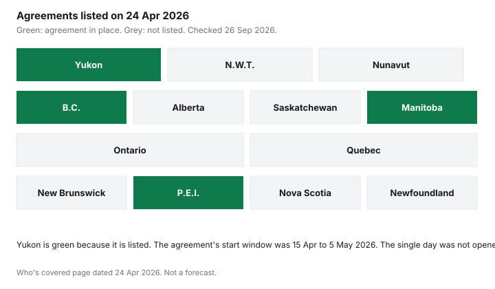

Healthcare · Canada
National Pharmacare in 2026: What Is Actually Covered, in Which Provinces, and What Hasn't Changed
"Free prescriptions" is not what the federal pages say. As of the who's covered page dated 24 Apr 2026, national pharmacare is an agreement between Canada and four jurisdictions: British Columbia, Manitoba, Prince Edward Island, and Yukon. It pays for listed contraception and diabetes products for people who already qualify for that jurisdiction's public health coverage. It does not replace the Ontario Drug Benefit, Alberta's plans, or the RAMQ public plan. This page stops at what is signed. It does not guess who will sign next.
Key takeaways
- The bilateral agreements say the Pharmacare Act came into force on 10 Oct 2024. Health Canada's agreement list, page details 26 Jan 2026, names four jurisdictions.
- You are covered only if you live in a jurisdiction with an agreement, you are eligible for that public health insurance, and you have a valid prescription for a listed product. Age, income, and a workplace plan do not decide eligibility on the federal page.
- Listed contraception and diabetes medications are the federal list. The dispensing fee on those products is included. Delivery fees and pharmacist prescribing fees are not.
- BC PharmaCare Plan NP launched 1 Mar 2026. Manitoba's enhanced program page says diabetes and birth-control coverage under that program is effective 15 Apr 2025. PEI's start date was not on a page this guide could open.
- If you live anywhere else, your provincial or territorial plan and your workplace plan are unchanged by these agreements.
The Pharmacare Act (in force 10 Oct 2024) in plain terms
The Manitoba funding agreement, and the other bilateral texts in the same series, state that on 10 Oct 2024 the Pharmacare Act came into force. The federal description of that Act, in the February 2025 Manitoba news release, is that it received royal assent and came into force the same day. The purpose printed in the agreements is to improve access and affordability of prescription drugs and related products, and to support appropriate use, working with provinces, territories, and Indigenous partners. The first funded piece is universal, single-payer, first-dollar coverage for a range of contraception and diabetes drugs, plus funding to improve access to diabetes devices and supplies.
First-dollar, in those agreements, means the listed products are not sitting behind a deductible in the national layer. It does not mean every drug in your medicine cabinet. It does not mean a device is covered the same way as a pill. And it applies only where an agreement is in force. The provincial comparison is the rest of the medicine cabinet.
Which provinces and territories have agreements: BC, Manitoba, PEI and Yukon
The who's covered page, dated 24 Apr 2026, lists British Columbia, Manitoba, Prince Edward Island, and Yukon, each with a link to that funding agreement and to Annex A, the product list. The bilateral index, page details 26 Jan 2026, matches those four and no others. Signing announcements on that index are British Columbia on 6 Mar 2025, Manitoba on 27 Feb 2025, Prince Edward Island on 7 Mar 2025, and Yukon on 20 Mar 2025. A signature is not the day a pharmacy system starts paying.
British Columbia's Plan NP page, updated 29 Jun 2026, says the plan launched on 1 Mar 2026. It covers many diabetes medications, menopausal hormone therapy, and contraceptives for B.C. residents enrolled in MSP. Coverage is automatic at the pharmacy. You do not register or send receipts for Plan NP. Some diabetes drugs (the page names saxagliptin, linagliptin, and pioglitazone) need a Special Authority approval before the fill. The same page says that on 1 Apr 2026 PharmaCare expanded coverage of certain diabetes-related supplies and devices with federal funding. Read the device list before you assume a pump or a monitor is included. The federal-provincial agreement was announced 6 Mar 2025, which is eleven months before the 1 Mar 2026 launch.
Manitoba's Enhanced Pharmacare Program page says that effective 15 Apr 2025 the program provides eligible residents with no-cost coverage of most medications for birth control and diabetes, and also describes HIV prevention and treatment and hormone replacement therapy on that provincial page. The same page says federal national-pharmacare funding supports the diabetes and birth-control coverage. The 27 Feb 2025 federal news release said Manitobans could anticipate coverage for the majority of the products in June 2025. The provincial page's effective date is 15 Apr 2025. Use the Manitoba page for what is in effect, and do not treat HIV or hormone therapy as items this guide verified on the federal Annex A.
Prince Edward Island is on the who's covered list. The 7 Mar 2025 signing is on the federal index. A provincial page that would confirm a 1 May 2025 start did not open on 26 Sep 2026, so that start date is not stated here. Read Annex A and the PEI program page before you rely on a headline. Yukon's funding agreement sets an implementation date between 15 Apr 2026 and 5 May 2026, to be confirmed in writing at least 45 days ahead. The who's covered page dated 24 Apr 2026 already lists Yukon. This draft did not open a later notice naming the single day coverage began. Check the Yukon annex if you live there.
| Jurisdiction | Agreement listed? | Date this guide could verify | What to read next |
|---|---|---|---|
| British Columbia | Yes | Announced 6 Mar 2025. Plan NP launched 1 Mar 2026. | BC PharmaCare Plan NP, and Annex A |
| Manitoba | Yes | Announced 27 Feb 2025. Provincial page: effective 15 Apr 2025 for the enhanced program's diabetes and birth-control coverage. | Manitoba Enhanced Pharmacare Program, and Annex A |
| Prince Edward Island | Yes | Announced 7 Mar 2025. Pharmacy start date not opened. | PEI agreement, Annex A |
| Yukon | Yes | Announced 20 Mar 2025. Agreement window 15 Apr 2026 to 5 May 2026. Single start day not opened. | Yukon agreement, Annex A |
| Every other province and territory | No agreement as of the 24 Apr 2026 who's covered page | Not listed on the 26 Jan 2026 bilateral index either. | Your provincial or territorial drug plan |

What's covered: contraception, diabetes medications and the diabetes device fund
The what's covered page, also dated 24 Apr 2026, says pharmacare covers a range of birth control options and diabetes medications, and only the listed products. The cost includes the dispensing fee. It does not include delivery fees or pharmacist prescribing fees. The bilateral index says the products are free or at low cost at the pharmacy, that you will not need to coordinate benefits with private insurance for them, and that other fees such as prescribing or delivery fees may still apply. "Free or at low cost" is the federal wording. A brand the annex does not list can still leave you a bill. PEI's own materials, which this guide did not open in full, are the place to check brand exceptions. Do not assume every brand name is the covered version.
Diabetes devices are a funding stream, not an automatic free pump. B.C. says certain supplies and devices expanded on 1 Apr 2026 under the federal funding, on top of Plan NP's drug list. The product list is on the provincial diabetes page, not in this article. Manitoba's agreement text also funds improved access to devices and supplies. Open Annex A for drugs and the provincial device page for hardware. If a device needs a special authority, the fill will not pay at 100 percent until that approval exists.
If you live elsewhere (Ontario, Alberta, Québec…): what still applies to you
Ontario, Alberta, Saskatchewan, Quebec, New Brunswick, Nova Scotia, Newfoundland and Labrador, the Northwest Territories, and Nunavut are not on the who's covered list dated 24 Apr 2026. Nothing in the agreements changes your deductible, your co-pay, or your formulary. Ontario seniors still use the Ontario Drug Benefit. Quebec residents still use a group plan or the RAMQ public plan, described on the comparison page. Alberta still uses its own seniors' and non-group programs. If a headline says the country has pharmacare, the practical test is whether your jurisdiction is one of the four.
Federal public drug programs are a separate track. The who's covered page says that if you are covered under a federal public drug benefit program, you keep that coverage. Non-Insured Health Benefits, veterans' coverage, and Canadian Armed Forces plans are not cancelled by a provincial pharmacare agreement. Confirm with that program. This page does not restate their formularies.
How it interacts with workplace plans
Inside an agreeing jurisdiction, the bilateral index says you will not need to coordinate benefits with private insurance for the products the agreement covers. That is a narrower sentence than "cancel your workplace plan." Drugs that are not on Annex A still run through the workplace plan and the provincial plan. The workplace drug guide is prior authorization and dispensing-fee caps for everything else. Two workplace plans still follow the coordination guide.
Outside the four jurisdictions, a workplace plan is unchanged by these agreements. Do not drop a plan because a national headline used the word free. The gap guide is the comparison if you are about to lose workplace cover. The retiree bridge is the years before a provincial senior plan starts. National pharmacare does not fill that bridge in Ontario.
What to watch for next, without speculating
The page to re-read is the who's covered list, not a prediction. It was dated 24 Apr 2026 when this guide was checked on 26 Sep 2026. If a fifth jurisdiction signs, it will appear there and on the bilateral index, with its own annex and its own start date. This article will not name a province that "should" be next. Device lists and brand exceptions change inside the four agreements that already exist. Those changes belong on the provincial page, dated, before you count them as savings.
What has not changed, and is unlikely to be changed by a headline alone, is the need for a prescription, a listed DIN, and a public health number in an agreeing jurisdiction. Everything else is still your provincial plan.
Sources & date stamps
- Health Canada, Who's covered under national pharmacare, page details 24 Apr 2026. Four jurisdictions. Age, income, and workplace insurance do not decide eligibility. Federal clients keep federal plans. Opened 26 Sep 2026.
- Health Canada, What's covered, page details 24 Apr 2026. Listed contraception and diabetes medications, dispensing fee included, delivery and pharmacist prescribing fees excluded.
- Health Canada, National pharmacare bilateral agreements, page details 26 Jan 2026. Four agreements. Announcement dates 27 Feb 2025, 6 Mar 2025, 7 Mar 2025, and 20 Mar 2025. Free or low cost. No private-insurance coordination for those products.
- BC PharmaCare Plan NP, updated 29 Jun 2026. Launched 1 Mar 2026. Certain devices expanded 1 Apr 2026. Opened 26 Sep 2026.
- Manitoba Enhanced Pharmacare Program page. Effective 15 Apr 2025. Opened 26 Sep 2026. Yukon agreement implementation window 15 Apr 2026 to 5 May 2026, from the funding-agreement text. PEI pharmacy start date not opened.
Frequently asked questions
Is pharmacare free prescriptions for everyone?
No. Health Canada's bilateral page says four provinces and territories have agreements that make a range of contraception and diabetes medications free or low cost. The who's covered page dated 24 Apr 2026 lists British Columbia, Manitoba, Prince Edward Island, and Yukon. You still need to live there, qualify for that public health coverage, and have a prescription for a listed product. Other drugs, and every other jurisdiction, are outside that sentence.
Which provinces have national pharmacare agreements?
British Columbia, Manitoba, Prince Edward Island, and Yukon. Those are the four on the who's covered page dated 24 Apr 2026 and on the bilateral index dated 26 Jan 2026. Announcement dates on the index are 6 Mar 2025, 27 Feb 2025, 7 Mar 2025, and 20 Mar 2025. A signature is not always the pharmacy start date. B.C. Plan NP launched 1 Mar 2026. Manitoba's enhanced program page says 15 Apr 2025.
What drugs and devices are covered?
A range of birth control options and diabetes medications, only if they are on that jurisdiction's annex. The what's covered page says the dispensing fee is included and that delivery fees and pharmacist prescribing fees are not. Diabetes devices are a separate funding stream. B.C. says certain supplies and devices expanded on 1 Apr 2026. Read the annex and the provincial device page before you treat a pump as included.
Does pharmacare replace my workplace plan?
Not as a wholesale replacement. In an agreeing jurisdiction, the federal index says you will not need to coordinate private insurance for the products the agreement covers. Drugs that are not listed still use your workplace plan and your provincial plan. Outside the four jurisdictions, the workplace plan is unchanged. Do not cancel it because of a national headline.
What if I live in Ontario, Alberta or Québec?
You are not in a listed agreement on the page dated 24 Apr 2026. Ontario Drug Benefit, Alberta's programs, and Quebec's group-plan-or-RAMQ rule still apply. National pharmacare has not changed those deductibles or premiums. Use the provincial comparison for how those plans are built, and check the who's covered page again only when it shows a new jurisdiction.